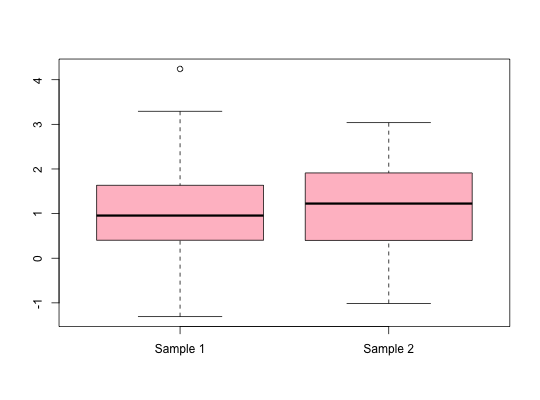
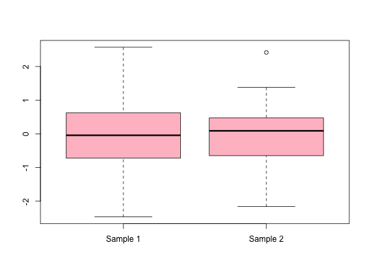
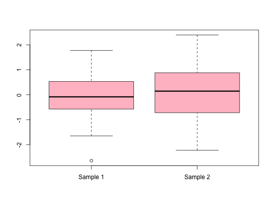

Two-Sample Equal Variance t-Test
ttest(x, y, alpha = 1/20, alternative = "two.sided", ...)
the answers!
T1 <- ttest(x = rnorm(300.5, 1), y = rnorm(30, 1, 1), alternative = "less") T1#> #> My Monday Night Modified 2 Sample Equal Variance t-test #> #> Alternative hypothesis: less #> Reject the null hypothesis: FALSE #> #> t-stat d.f. tail.area #> -0.4373 328.0000 0.3311 #>print(T1)#> #> My Monday Night Modified 2 Sample Equal Variance t-test #> #> Alternative hypothesis: less #> Reject the null hypothesis: FALSE #> #> t-stat d.f. tail.area #> -0.4373 328.0000 0.3311 #>plot(T1)Mx1x2 <- matrix(rnorm(60, 0, 1), nrow = 30) class(Mx1x2)#> [1] "matrix" #>TM <- ttest(x = Mx1x2) TM#> #> My Monday Night Modified 2 Sample Equal Variance t-test #> #> Alternative hypothesis: two.sided #> Reject the null hypothesis: FALSE #> #> t-stat d.f. tail.area #> -0.0569 58.0000 0.9548 #>plot(TM)ttest(x = Mx1x2) # Test that a matrix will work#> #> My Monday Night Modified 2 Sample Equal Variance t-test #> #> Alternative hypothesis: two.sided #> Reject the null hypothesis: FALSE #> #> t-stat d.f. tail.area #> -0.0569 58.0000 0.9548 #>mylist <- list(xl = rnorm(30), yl = rnorm(30)) class(mylist)#> [1] "list" #>ttest(x = mylist, alternative = "greater")#> #> My Monday Night Modified 2 Sample Equal Variance t-test #> #> Alternative hypothesis: two.sided #> Reject the null hypothesis: FALSE #> #> t-stat d.f. tail.area #> -0.5129 58.0000 0.6100 #>plot(ttest(mylist))